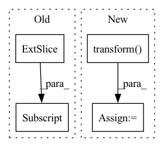

Pattern ID :2568

Before Change
w_offset = random.randint(0, max(0, nh - h - 1))
h_offset = random.randint(0, max(0, nh - h - 1))
img_A = img_A[:, h_offset: h_offset + h, w_offset: w_offset + h]
img_B = img_B[:, h_offset: h_offset + h, w_offset: w_offset + h]
img_A = self.transform(img_A)
img_B = self.transform(img_B)
After Change
img_A = transforms.ToTensor()(img_A)
img_B = transforms.ToTensor()(img_B)
img_A = self.transform(img_A)
img_B = self.transform(img_B)
return img_A, img_B
finally:
In pattern: SUPERPATTERN
Frequency: 3
Non-data size: 4
Instances
Fragment ID: 10685363
Project Name: euphoriayan/zi2zi-pytorch
Commit Name: d18cdce2416d812c3944db8aef913e06879b022b
Time: 2020-06-29
Author: ysq58000@foxmail.com
File Name: data/dataset.py
M Class Name: DatasetFromObj
N Class Name: DatasetFromObj
M Method Name: process(2)
N Method Name: process(2)
M Parent Class: data.Dataset
N Parent Class: data.Dataset
M File Name: data/dataset.py
N File Name: data/dataset.py
M Start Line: 53
M End Line: 76
N Start Line: 54
N End Line: 97
'>
Before Change
fname = os.listdir(image_folder)[0]
image_path = os.path.join(image_folder, fname)
img = io.imread(image_path)[:, :, :3].astype("float32")
img = transform.resize(img, (self.shape, self.shape))
mask = self.get_mask(mask_folder, self.shape,
After Change
img = Image.open(image_path).convert("RGB")
mask = self.get_mask(mask_folder)
img = self.transform(img)
mask = self.target_transform(mask)
return img, mask, fname
'>
Fragment ID: 10685360
Project Name: tuttelikz/farabio
Commit Name: 0f431d2e3fa741ab639daade70a7e1e878fa524b
Time: 2021-07-29
Author: s.askaruly@gmail.com
File Name: farabio/data/biodatasets.py
M Class Name: DSB18Dataset
N Class Name: DSB18Dataset
M Method Name: __getitem__(2)
N Method Name: __getitem__(2)
M Parent Class: Dataset
N Parent Class: Dataset
M File Name: farabio/data/biodatasets.py
N File Name: farabio/data/biodatasets.py
M Start Line: 223
M End Line: 237
N Start Line: 238
N End Line: 247
'>
Before Change
fname = os.listdir(image_folder)[0]
image_path = os.path.join(image_folder, fname)
img = io.imread(image_path)[:, :, :3].astype("float32")
img = transform.resize(img, (self.shape, self.shape))
mask = self.get_mask(mask_folder, self.shape,
After Change
img = Image.open(image_path).convert("RGB")
mask = self.get_mask(mask_folder)
img = self.transform(img)
mask = self.target_transform(mask)
return img, mask, fname
'>
Fragment ID: 10685364
Project Name: tuttelikz/farabio
Commit Name: 2169ebbe0a5d7c4307303181cdf96c0f802f8da6
Time: 2021-07-29
Author: s.askaruly@gmail.com
File Name: farabio/data/biodatasets.py
M Class Name: DSB18Dataset
N Class Name: DSB18Dataset
M Method Name: __getitem__(2)
N Method Name: __getitem__(2)
M Parent Class: Dataset
N Parent Class: Dataset
M File Name: farabio/data/biodatasets.py
N File Name: farabio/data/biodatasets.py
M Start Line: 223
M End Line: 237
N Start Line: 238
N End Line: 247